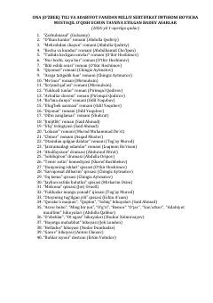

OTMilliy sertifikat imtihoni uchun tavsiya etilgan badiiy asarlar ro'yxati.
Ushbu qo‘llanmada ona tili va adabiyot fanidan milliy sertifikat imtihoniga tayyorgarlik ko‘rish uchun mustaqil o‘qishga tavsiya etilgan o‘zbek va jahon adabiyotining sara badiiy asarlari ro‘yxati keltirilgan. Ro‘yxatdan romanlar, qissalar, dramalar, hikoyalar va she'riy namunalar o'rin olgan.